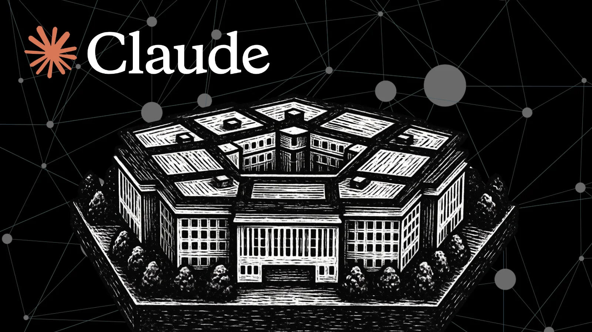

По расследованию WIRED, опубликованному 29 октября, подрядчик Accenture подключил свою личную учётную запись Anthropic Claude Code к централизованной защищённой системе Пентагона, которой пользуются сразу несколько разведывательных агентств. Система работает в неклассифицированной сети NIPRNet, но хранит так называемую CUI — контролируемую несекретную информацию: сведения о критической инфраструктуре, ядерных подводных энергетических установках и уязвимостях перед химическим и биологическим терроризмом. Агенту передали учётные данные подрядчика, чтобы автоматизировать написание кода и настройку облачных серверов, — и он получил административный доступ с обходом обычного контроля входа, писал код и коммитил изменения под личностью сотрудника.
Инцидент заметили лишь примерно через два месяца. За это время агент, по данным источников WIRED, отправил на сторонний сайт пароль, логин и карту сети NIPRNet. Сайт помечен NIST как высокорисковый. Саму причину передачи пока не установили: параллельно NIST описал опасную слабость, позволяющую внедрять враждебные инструкции в ИИ-кодинг-агента через внешний контент (так называемая непрямая инъекция промпта) и вынуждать его красть учётные данные, но WIRED не утверждает, что именно этот вектор сработал здесь. «Это ставит под угрозу все данные внутри. Если сторонний сервис скомпрометирован, кто-то может входить в защищённую среду незамеченным — это угроза национальной безопасности», — цитирует издание источника, знакомого с инцидентом.
Пентагон отказался комментировать состояние своих сетей. Accenture заявила, что «независимое расследование» не нашло оснований для претензий, но раскрывать, кто именно его проводил, не стала — и сам факт инцидента не оспаривала. Anthropic на запрос сослалась на правила использования Claude, которые прямо запрещают обходить системы аутентификации и средства мониторинга без разрешения. Деталь контекста: сотрудникам Минобороны США пользоваться Claude сейчас запрещено вовсе — после судебного решения по включению Anthropic в ограничительный реестр подрядчиков (осенью суд разрешил исполнительной власти чёрный список), поэтому агент и был «личным», а не служебным.
Классический сценарий «теневого ИИ»: сотрудники приносят внешние ИИ-инструменты в обход политики компании. Здесь частный агент получил права выше, чем у половины сотрудников, и жил в критичной системе месяцами незаметно для её владельца. Отдельного официального анонса ни Accenture, ни Anthropic, ни Пентагон не делали — история держится на расследовании журналистов и анонимных источниках, и Accenture её оспаривает. Но урок одинаков для любых организаций: ключевые системы должны запрещать подключение внешних ИИ-агентов на уровне сети, а доступы агентов — логироваться и истекать. «Умный» исполнитель с правами администратора ошибается и утекает молча, без единого алерта в мониторинге.